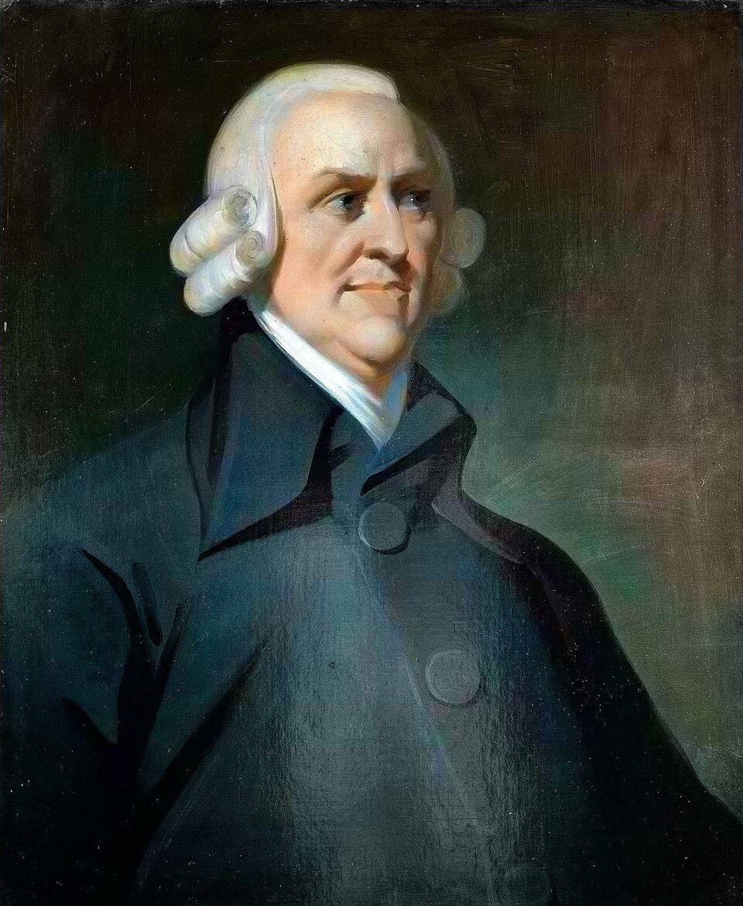

EXTERNAL LINKS
TO AS MUCH AS POSSIBLE TO GIVE A BASE OF AUTHORITY
Its a dummy page for me testing out which possible htmls and css is best i have right now which i can use to make new webpages.
Michel Foucault (1926–1984) was a French philosopher and historian of ideas who argued that power and knowledge are intertwined: institutions like prisons, hospitals, and schools produce knowledge about people and use it to classify, discipline, and govern them. His best-known works are Discipline and Punish and The History of Sexuality.

Adam Smith (1723–1790) was a Scottish philosopher, moral theorist, political economist, and one of the most important thinkers of the Scottish Enlightenment. He is widely known for The Wealth of Nations, a foundational work in the history of modern economics, but his intellectual interests extended far beyond markets and wealth.
Adam Smith's philosophy was deeply concerned with human nature, morality, sympathy, justice, social institutions, trade, government, and prosperity. Before becoming famous as an economist, Smith was primarily known as a professor of moral philosophy. His earlier work, The Theory of Moral Sentiments, explored how human beings develop moral judgments and live together in society.
Smith is often described as the father of modern economics because of his analysis of markets, labor, trade, and economic growth. However, reducing Adam Smith to a simple defender of greed or unrestricted capitalism misses the complexity of his thought. His economic ideas were connected to a broader philosophical vision of morality, justice, freedom, institutions, and human flourishing.
Understanding Adam Smith's philosophy and economics therefore requires examining both of his major works. The moral world of sympathy and the impartial spectator in The Theory of Moral Sentiments forms an important background for the economic world of exchange, self-interest, division of labor, and markets described in The Wealth of Nations.
| Position | Belief dimension | Knowledge dimension |
|---|---|---|
| Theism | Affirms that God exists. | May or may not claim that God's existence is known. |
| Atheism | In a strong philosophical sense, affirms that God does not exist. | May or may not claim that God's non-existence is known. |
| Agnosticism | Often withholds belief between theism and atheism in ordinary usage. | Denies or withholds the relevant claim to knowledge or adequate epistemic support. |
| Agnostic atheism | Does not affirm that God exists and may affirm atheism in a broader sense. | Does not claim certainty or knowledge that God does not exist. |
Homeric and Hesiodic poetry provide influential accounts of gods, justice, human fate, and the origins of the cosmos
The Milesian thinkers begin systematic inquiries into nature, principles, and the structure of the cosmos
Pythagoreans, Heraclitus, Parmenides, and the Eleatics develop major theories of number, change, being, and reality
The Sophists and Socrates transform philosophical attention toward language, ethics, politics, knowledge, and human life
Plato's Academy and Aristotle's Lyceum establish major traditions of systematic philosophical inquiry
Hellenistic philosophy spreads across the Mediterranean through Stoicism, Epicureanism, Skepticism, Cynicism, and other schools
Adam Smith was a Scottish philosopher, moral theorist, and political economist who lived from 1723 to 1790. He was one of the leading thinkers of the Scottish Enlightenment and is widely regarded as a foundational figure in modern economics.
Adam Smith is famous for writing The Wealth of Nations and developing influential ideas about the division of labor, free markets, trade, self-interest, and the invisible hand. He also wrote the major philosophical work The Theory of Moral Sentiments.
Adam Smith's philosophy examined morality, sympathy, human nature, justice, freedom, society, and economic life. His moral philosophy emphasized sympathy and the impartial spectator, while his political economy studied markets, labor, wealth, and institutions.
The invisible hand is a phrase associated with Adam Smith's idea that individuals pursuing their own interests can sometimes contribute to broader social outcomes without intending to do so. It does not mean that every selfish action automatically benefits society.
Adam Smith's moral philosophy emphasizes sympathy, imagination, social interaction, and the impartial spectator. He argued that people can evaluate their own conduct and the conduct of others by imagining how a fair observer would judge their actions.
Adam Smith analyzed the development of commercial society and strongly influenced later theories of capitalism. He supported competition and economic freedom but also recognized the importance of justice, education, public institutions, and limits on special privileges.
The division of labor is the organization of production into specialized tasks performed by different workers. Smith argued that specialization can dramatically increase productivity, skill, and economic output.
TO AS MUCH AS POSSIBLE TO GIVE A BASE OF AUTHORITY
The information on this page draws on Foucault's published works, collected lecture courses, and established scholarly resources. These sources are provided so readers can verify the historical, bibliographical, and philosophical information discussed throughout the article.
Editorial note: This page distinguishes between Foucault's works published during his lifetime and texts published posthumously from manuscripts or lecture materials. Publication dates refer to the original publication or lecture-course period where applicable, rather than the date of a particular English translation.
Explore each major Foucault topic in its own detailed guide.
“The beginning is the most important part of the work.”